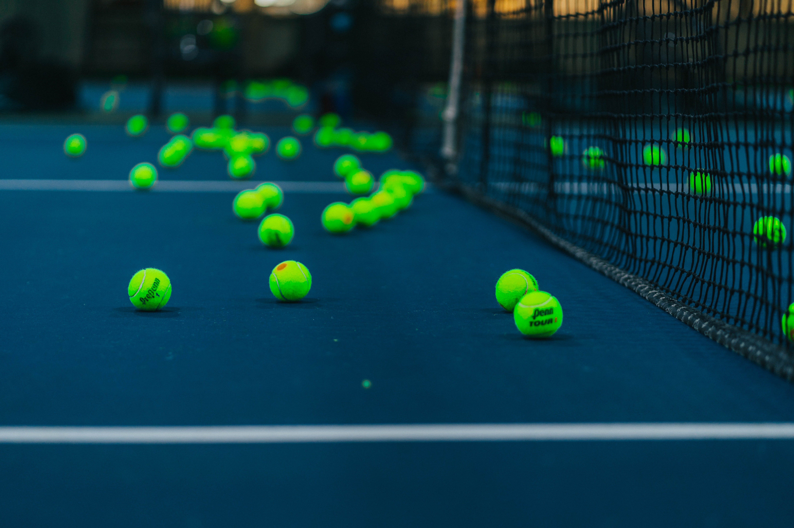

Tennis World

Source: Upsplash, Hermes Rivera
Core Equipment
It is important to have the correct equipment to play Tennis. It is beneficial not only to your ability to learn, but for your safety as well. Purchasing low quality products will lead to injury and inability to reach your maximum potential in the sport. With that being said, You must have the following essnetials.
- Racket
- Attire
- Equipment
Tennis Racket
Anything that you can find at Walmart, Daiso, or any superstore that sells rackets under 50$ are not a worthwhile investment. Although they are made from the top brands such as Wilson and Head, they are made to only help recreational players have the ability to play. The frames tend to be hollow and will break easily in the hands of a more advanced player. If you are in a secluded area and do not have access to local shops, Tennis Warehouse and MidwestSports are both great online retailers for all Tennis Equipemnt. I highly recommend looking for sale rackets. Players tend to gravitate towards newer models, but they do not offer much increase in playability in comparison to the price you have to pay. That being said, there is nothing wrong with buying used racquets. If you are in the Los Angeles area, the most notorious tennis shop is the Racket Doctor. Known for its stringing services and insanely low prices, they are a fan favorite to all tennis players in Los Angeles. You can visit their websites in the links below.
You can use the form bellow to find out what kind of racquet you should get.
Racket Recomendator
Results
- Racket:
- Brand:
- Strung Weight:
- String Pattern:
Attire and Equipment
The two most important peices of attire are the shoes and bottoms that you wear. The shoe is personally based on personal preference. You can look through tennis warehouse reviews to see what people like about them to influence your choice of purchase just as long as long as they are genuine tennis shoes. As for bottoms you want something that is breathable and HAS POCKETS!!! While you play tennis you need to make sure that you can carry one or two tennis balls with you at all times. Without pockets, the games become a lot slower and you spend a majority of your time picking up tennis balls.
As for equipment, my three recomnded items to bring with you are tennis balls, water, and towels. It is nice to always bring your own can because you do not want to be the guy that constantly uses other peoples tennis balls. For water, I would recommend bringing a large insulated bottle that can keep it nice and cold during hot days. Lastly, the towel is of upmost importance. Wiping the sweat during play helps you remain focus during the rally. For holding all of your gear I recommend getting a tennis bag that can carry up to 6 racquets. I would advise not to get a three racket bag as they have minimal space for shoes and racquet, as well has having minimal extra compartments for your essentials such as phone, keys, and wallet. Check out this video from Tennis Warehouse about other items you can bring to the court!
Tennis Bag Essentials (Tennis Warehouse)
Tennis World by Alexander Shen
References: Bootstrap: Carousel w3schoos